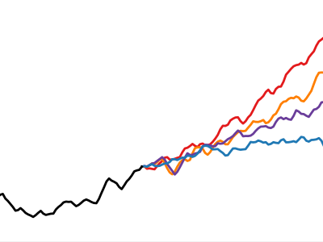

Toggle navigation sidebar
Toggle in-page Table of Contents

NorESM Experiments
NorESM2 Key Experiments
NorESM2-MM DECK
NorESM2-MM piControl
NorESM2-MM AMIP
NorESM2-MM abrupt-4xCO2
NorESM2-MM 1ptcCO2
NorESM2-LM DECK
NorESM2-LM piControl
NorESM2-LM AMIP
NorESM2-LM abrupt-4xCO2
NorESM2-LM 1ptcCO2
NorESM2 historical
NorESM2-MM historical
NorESM2-LM historical
NorESM2 SSPs
NorESM2-LM spin up
N1850OCBDRDDMS_f19_tn14_201218
N1850OCBDRDDMS_f19_tn14_250119
N1850OCBDRDDMS_f19_tn14_Gibr_220319
N1850OCBDRDDMS_f19_tn14_03042019
N1850OCBDRDDMS_f19_tn14_12042019
N1850OCBDRDDMS_f19_tn14_15042019
N1850OCBDRDDMS_f19_tn14_25042019
N1850OCBDRDDMS_f19_tn14_07052019
N1850OCBDRDDMS_f19_tn14_08052019
N1850OCBDRDDMS_f19_tn14_10052019
N1850OCBDRDDMS_f19_tn14_13052019
N1850_f19_tn14_06062019
N1850_f19_tn14_11062019
NorESM2-MM spin up
N1850OCBDRDDMS_f09_tn14_ice4_gam288_20181220
N1850OCBDRDDMS_f09_tn14_qmnmxrhmin_20190314
N1850OCBDRDDMS_f09_tn14_sg30_qmnmxrhmin_20190314
N1850OCBDRDDMS_f09_tn14_alwfix_sg30_qmnmx_20190314
N1850OCBDRDDMS_f09_tn14_20190411
N1850OCBDRDDMS_f09_tn14_20190417
N1850OCBDRDDMS_f09_tn14_20190425
N1850OCBDRDDMS_f09_tn14_20190506
N1850OCBDRDDMS_f09_tn14_20190512
N1850OCBDRDDMS_f09_tn14_20190515
N1850_f09_tn14_20190604
N1850_f09_tn14_20190610
N1850_f09_tn14_20190615
N1850_f09_tn14_20190622
N1850_f09_tn14_20190701
N1850_f09_tn14_20190726
N1850_f09_tn14_20190812
N1850_f09_tn14_20190913
Github repository
repository
open issue
Index